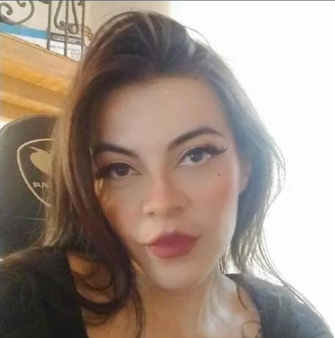
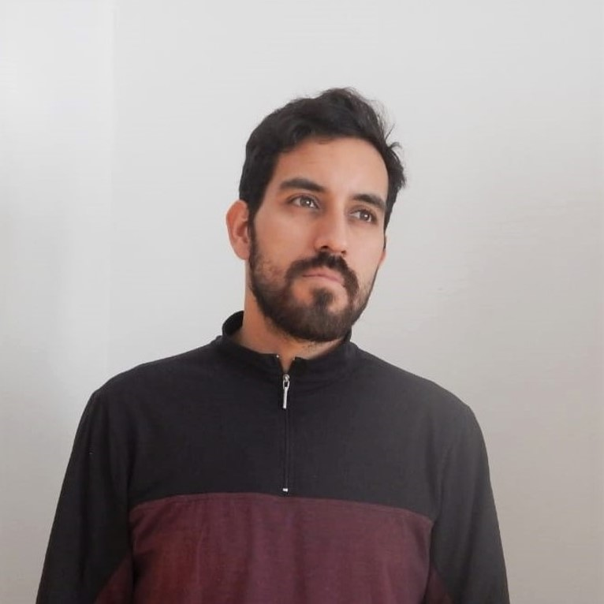

Equipo de Trabajo

Sara Luisa Zarama Ortiz
descripción breve del proyecto
Mi amor por los videojuegos no solo es un pasatiempo, sino una verdadera vocación que me impulsa a explorar y desarrollar nuevas ideas en este fascinante campo. Los videojuegos son, sin duda, una parte esencial de mi vida y mi fuente constante de inspiración. PortafolioJuan Pablo Cristancho Salamanca
descripción breve del proyecto
El desarrollo de aplicaciones es una de mis pasiones y el poder realizar y participar en diferencte proyectos, me encuentro avanzando en mis etudios y manejo dos idiomas como ingles y portugues y ambos los manejo en nivel avanzado, tambien soy estudiante de ingenieria de software. Perfil Linkedin

Luis Carlos Lozano Ariza
Estudiante de ingenieria de Software y Tecnologo en gestion Ambiental, apacionado por la tecnologia y la naturaleza, con un gran interes en aprender sobre programación
Perfil Linkedin